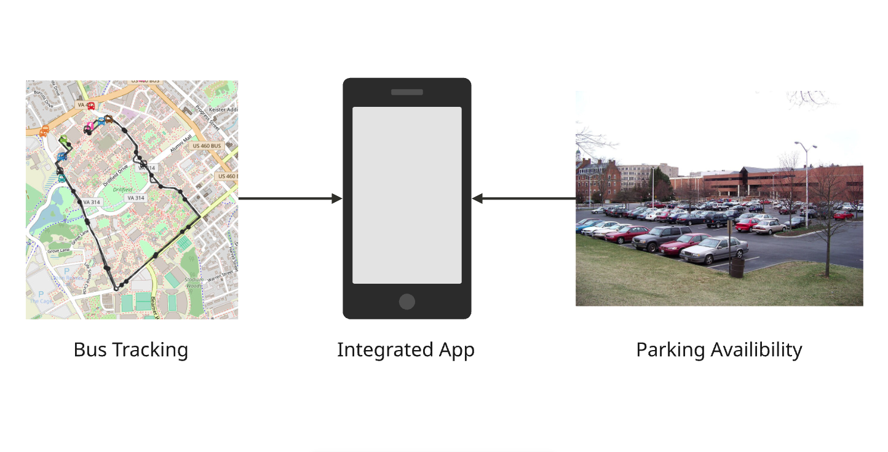

1Project Summary
Our project focuses on designing a Smart Campus Transportation System for Virginia Tech. The purpose of the system is to improve how students, faculty, staff, and visitors access transportation and parking information across campus. Currently, it is difficult for users to find reliable information about bus arrival times, parking availability, and transportation delays. Our proposed system would bring these services together in one place, providing real-time bus and shuttle locations, estimated arrival times, route and schedule information, and parking availability for each campus lot. The system would also help transportation operators monitor conditions and identify potential issues. Since the system depends on continuous updates from vehicles and parking sensors, its design must account for scalability, reliability, and situations where data is delayed or unavailable. The overall goal is to make campus transportation more predictable and convenient while helping operators monitor transportation conditions more effectively.

